Tanay Kumar
PhD Student · Aerospace Engineering · Texas A&M University
The Long Version
Aerospace has had me in a chokehold since my school days. I originally thought I would end up somewhere in the corporate aviation world, probably wearing nicer shoes and saying things like "synergy" with a straight face. But during my undergraduate degree in Electronics and Communication Engineering at Manipal Institute of Technology, I kept finding excuses to pull myself toward aircraft, UAVs, and autonomous systems. If there was a way to connect electronics, control, communication, or embedded systems to aerospace, I was probably trying to sneak into it.
That curiosity took me through avionics, navigation, UAVs, and eventually to aerospace Guidance, Navigation, and Control (GNC), where things finally started to click. I liked the mix of clean mathematical structure and the absolute chaos of the real physical world. Aerospace engineering is basically where elegant equations go to get humbled by wind, noise, delays, bad sensors, and hardware with strong opinions. Naturally, I found that very exciting.
Before coming to Texas A&M, I was fortunate to work on projects at IIT Bombay, IIT Kanpur, and NTRO, involving satellite-based navigation, UAV swarms, and control systems. At IIT Kanpur, I worked with Prof. Mangal Kothari, where I got my hands properly dirty with real UAV hardware: wiring sensors, debugging flight controllers at deeply unreasonable hours, and learning that "it works in simulation" is not the same as "it works."
I am currently a Ph.D. student in Aerospace Engineering at Texas A&M University and a member of the Intelligent Systems Research Lab, working with Prof. Raktim Bhattacharya. My undergraduate background in ECE gave me enough familiarity with sensors, signals, embedded systems, and communication hardware to understand some things faster than the average aerospace person staring suspiciously at a circuit diagram.
My research focuses on robust control, robotics, certifiable autonomy, and uncertainty-aware planning — especially for aerospace autonomy. I am interested in questions like: How do we design controllers that stay reliable when the model is only approximately right? How do autonomous systems make decisions with imperfect sensors? How do we reduce actuator usage without sacrificing stability or performance?
More recently, I have been exploring learning-to-plan methods. The goal is to build systems that can take a long-horizon task, break it into sensible sub-goals, and execute reliably even when the environment changes its mind. Transformer-based sequence models and GP-FSMs seem like promising ingredients in that recipe, and I am currently poking at that frontier with a very curious stick.
Separately, I have a mildly concerning habit of turning every problem into a linear algebra problem. If I can find a matrix, an eigenvalue, or an eigenvector hiding somewhere in the room, I immediately feel better. This was surprisingly useful — I got through my PhD qualifying exam in materials and structures mostly by convincing myself that beams, vibrations, buckling, and general structural panic were all just matrices wearing different hats.
Outside the lab, I try to remain a reasonably functional human. I play badminton, love to cook, and document some of my food experiments on Instagram at @the.jet.lagged.chef. I also play drums and ukulele, and I am part of a very amateur band with my professors and friends — which is exactly as chaotic and fun as it sounds.
My journey so far has been shaped by curiosity, good mentors, late-night debugging, and an unreasonable amount of excitement about my work. There is still a lot I want to build, learn, test, break, fix, and understand. The to-do list is long, but honestly, that is half the fun.
Awards & Honours
- 2025 Graduate Excellence Fellowship — Department of Aerospace Engineering, Texas A&M University
- 2025 3-Minute Thesis Finalist (Top 10) — 13th Annual 3MT Competition, Texas A&M University Watch talk
Academic Service
Peer Review
Judging
Teaching
Mentoring
Leadership
- 2026-Present Treasurer, Aerospace Engineering Graduate Student Association (AEGSA)
- 2025-Present Senator for Aerospace Engineering, Graduate and Professional School Government (GPSG), Texas A&M University
Sidequests
Things I do when I'm not proving stability theorems.
Drums & Ukulele
Part of a very amateur band with professors and friends. Exactly as chaotic and fun as it sounds.
Cooking
Food experiments documented at @the.jet.lagged.chef. The kitchen is just a lab where you eat your failures.
Badminton
My go-to sport for switching off the brain. Competitive enough to care about winning, casual enough to still have fun losing.
Building Things
Hardware tinkerer at heart. If it has motors, sensors, or blinking LEDs, I probably want to take it apart and make it do something it was never supposed to.
Gallery
Snapshots from the lab, the field, and everywhere in between.
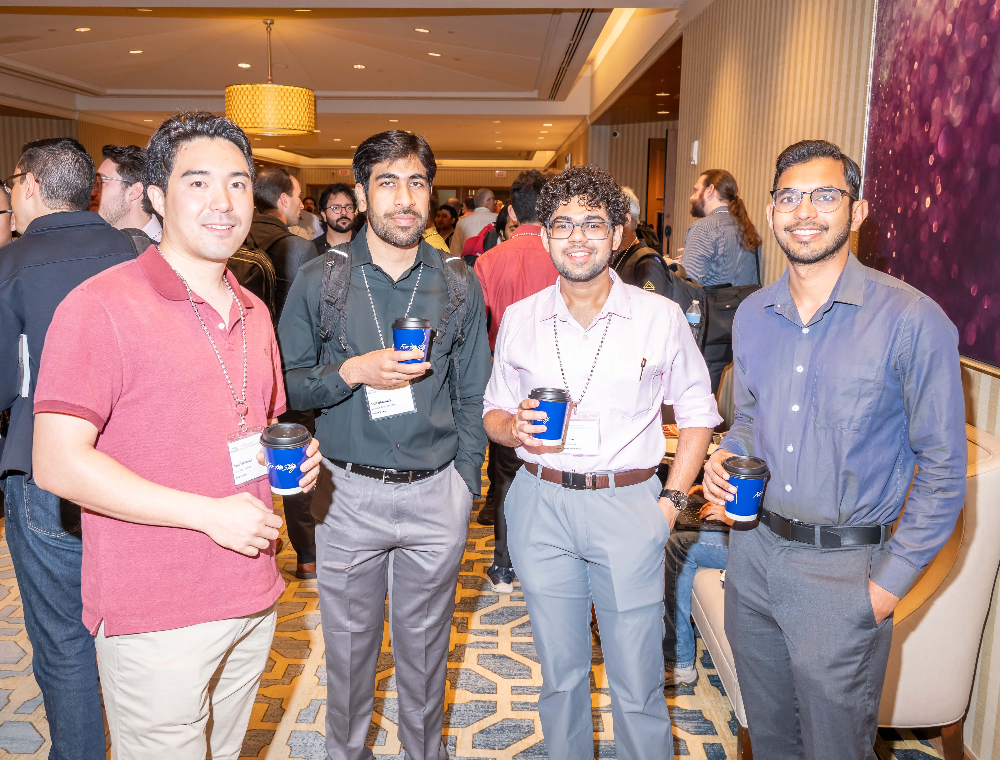
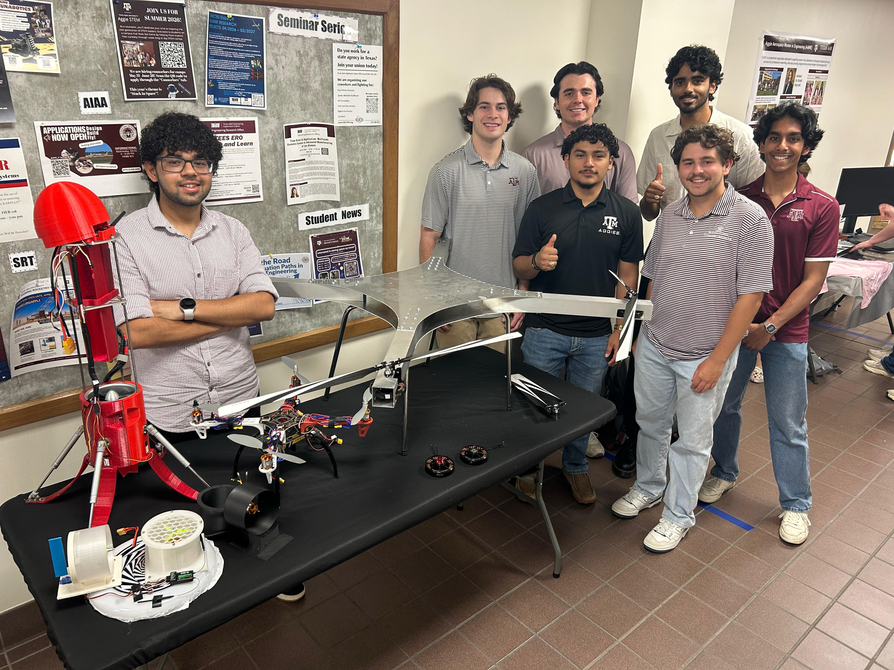
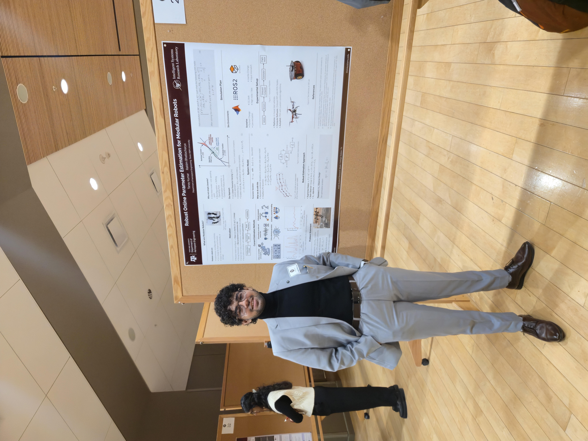
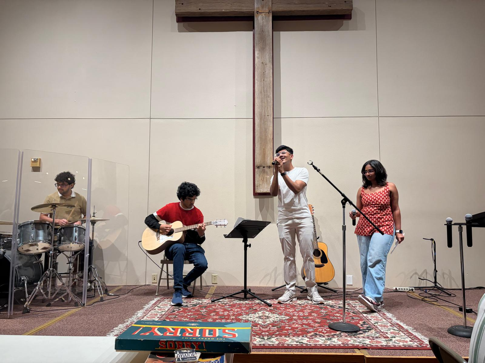
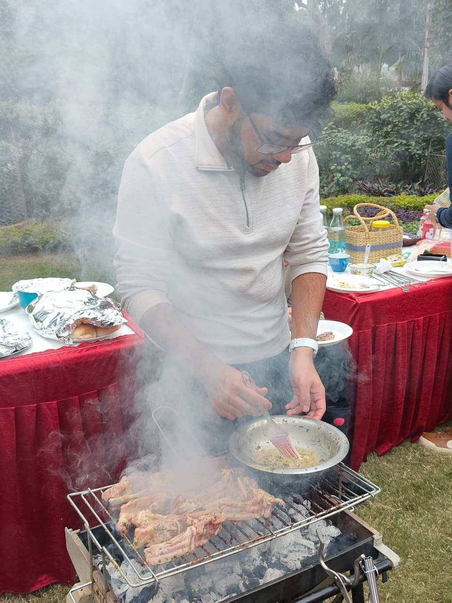
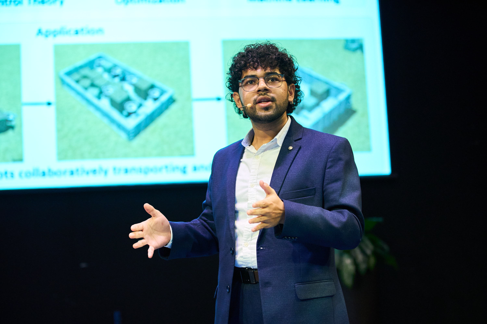
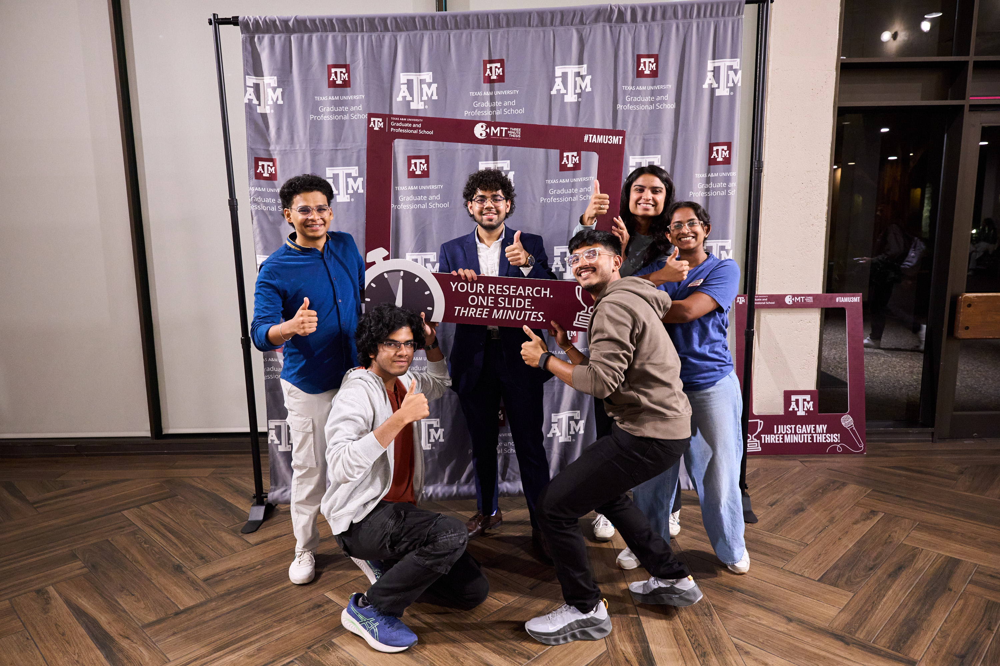
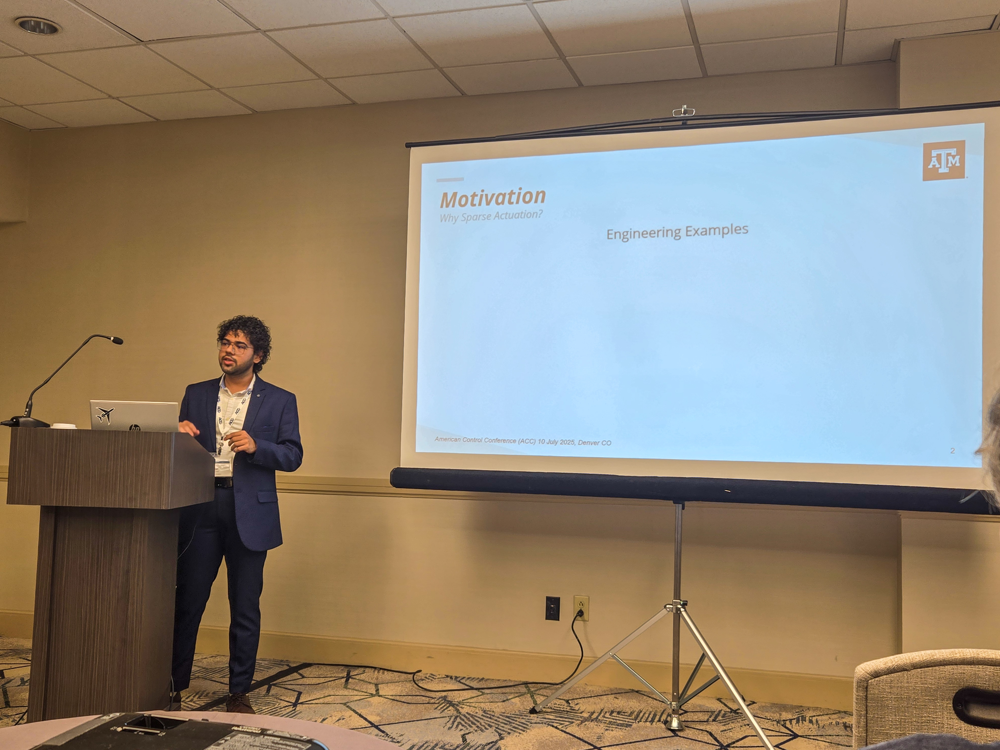
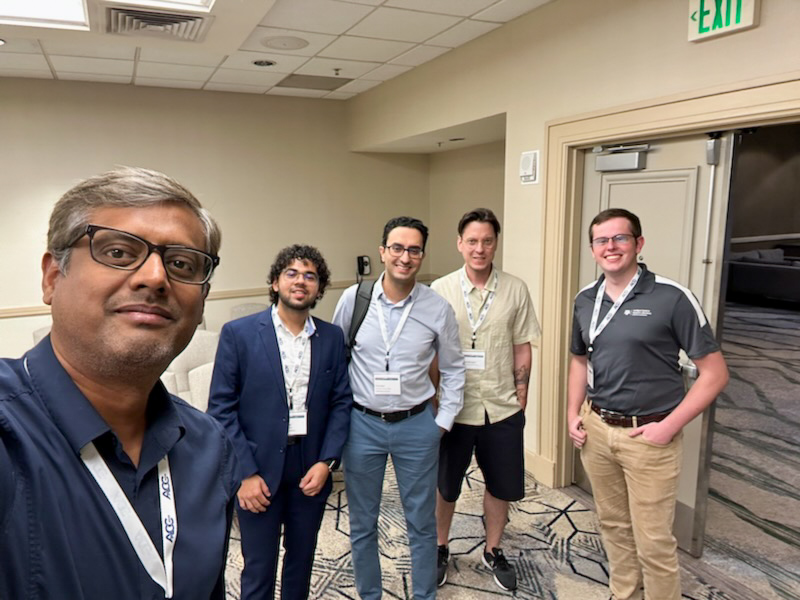
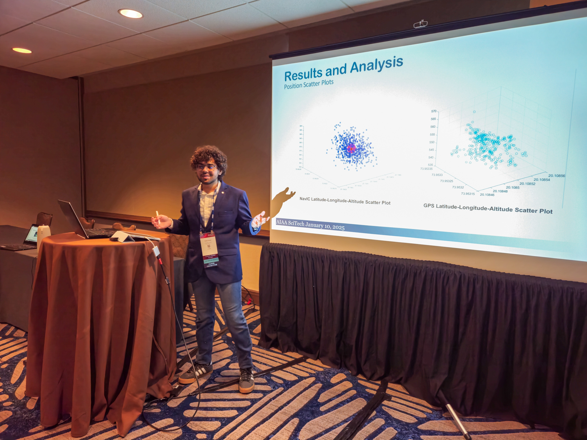
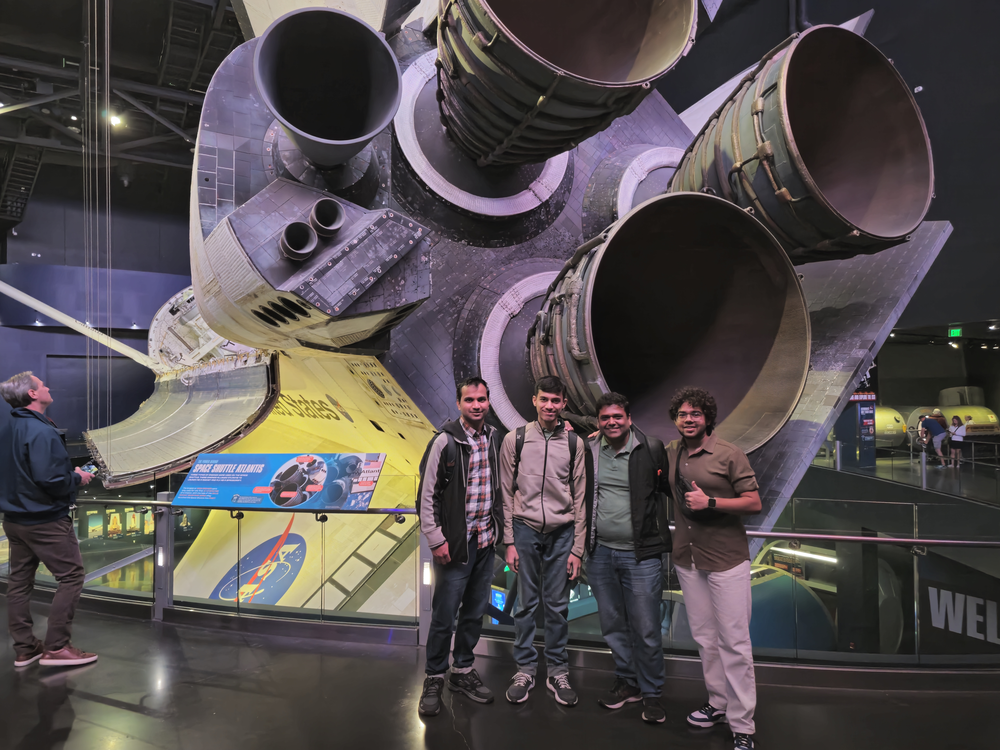
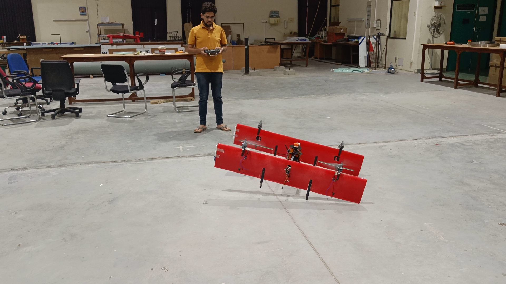

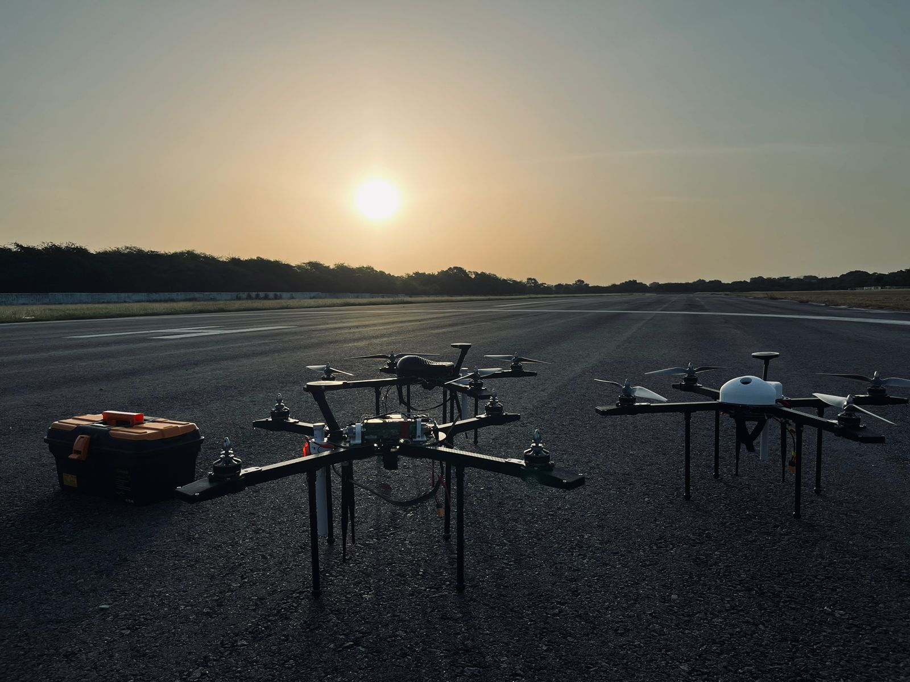
By the Numbers
A completely unscientific self-assessment.
Want to collaborate or just talk?
I'm always open to interesting conversations — whether it's a research idea, a collaboration, or just a good debate about control theory vs. machine learning.